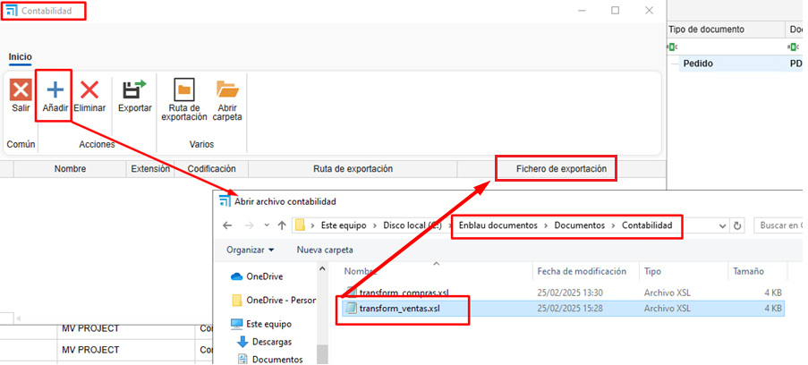

Importação para programa de contabilidade
1. Objetivo
Estabelecer os requisitos técnicos necessários para que o ENBLAU possa gerar arquivos compatíveis com o programa de contabilidade, utilizando transformação de dados via XSLT e exportação para formatos específicos, com as codificações aceitas.
2. Requisitos gerais
2.1. Formato de Entrada
- O sistema externo deve gerar arquivos em formato XML como base para a transformação.
- O arquivo XML deve cumprir a estrutura definida no esquema XSD (se aplicável).
- Deve ser fornecido um protocolo claro de mapeamento de campos.
2.2. Transformação
- A transformação do XML para o formato de importação será realizada através de um arquivo XSLT fornecido pelo fornecedor ou desenvolvido internamente.
- O arquivo XSLT deve cumprir com a especificação 1.0 ou 2.0, conforme a compatibilidade com o motor XSLT do sistema.
2.3. Formato de exportação
- O resultado da transformação deve ser gerado em um dos seguintes formatos, conforme definido para cada tipo de operação contábil:
| Tipo de Arquivo | Descrição |
|---|---|
.dat |
Formato de texto plano estruturado |
.txt |
Texto delimitado (ex.: tabulação, vírgula) |
.xml |
Estrutura XML compatível |
.xlsx |
Planilha (Excel) |
2.4. Codificação de texto
- A codificação dos arquivos deve ser uma das seguintes, conforme o tipo de arquivo:
| Codificação | Recomendado para |
|---|---|
| ANSI | .txt, .dat antigos |
| UTF-8 | .xml, .txt modernos |
| UTF-16 | .xml com caracteres especiais |
| UNICODE | Geral para arquivos multilíngue |
3. Protocolo de integração
3.1. Arquivo XSLT base
O fornecedor do sistema contábil deve fornecer o arquivo XSLT base e a documentação com o protocolo e o formato do arquivo para realizar a transformação.
3.2. Especificação de mapeamento de campos
Deve ser entregue um documento detalhando:
- Nome do campo no sistema de origem
- Posições
- Comprimento (caracteres)
- Tipo de dado (numérico, texto, data)
- Formato requerido (ex.:
dd/MM/yyyy,#,##0.00, etc.)
Exemplo de tabela de mapeamento:
A seguir, estrutura esperada para o arquivo de importação para Tipo de registro = 0, correspondente a Lançamentos sem IVA.
| Posições | Comprimento (caracteres) | Descrição do Campo | Comentários |
|----------|-------------------------|--------------------------|---------------------------------------------------------------------------|
| 1 | 1 | Tipo de Formato | Constante `5` |
| 2 a 6 | 5 | Código da empresa | Valores entre `00001` e `99999` |
| 7 a 14 | 8 | Data do lançamento | Formato `aaaammdd` (Ex.: 1 de fevereiro de 2000 → `20000201`) |
| 15 | 1 | Tipo de Registro | Constante `0` |
| 16 a 27 | 12 | Conta | Nível 6 a 12. Se não existir, será criado automaticamente |
Observações:
- Este formato deve ser gerado como arquivo de texto plano (
.txtou.dat) com codificação ANSI. - Os campos devem ocupar exatamente as posições indicadas, sem delimitadores.
- Todos os registros devem cumprir a estrutura de comprimento fixo para serem válidos.
4. Transformação de XML com XSLT
A estrutura acima pode ser gerada a partir de um arquivo XML de entrada, transformado com uma planilha XSLT. Recomenda-se que o XML contenha os seguintes nós mínimos:

4.1. Exemplo de arquivo gerado
Exemplo de linha gerada para arquivo .dat com formato de largura fixa:
-
Valores de exemplo:
-
Tipo de Formato:
5 - Código da Empresa:
00001 - Data do Lançamento:
20250728(28 de julho de 2025) - Tipo de Registro:
0 -
Conta:
430000000001 -
Resultado no arquivo
.dat:
500001202507280430000000001
-
Detalhe por seções:
Posições Conteúdo Descrição 1 5Tipo de Formato 2 a 6 00001Código da empresa 7 a 14 20250728Data do lançamento 15 0Tipo de Registro 16 a 27 430000000001Conta
⚠️ Importante
- Não incluir separadores, espaços extras ou quebras de linha entre campos.
- Cada linha representa um registro. Para múltiplos lançamentos, cada registro deve ocupar uma linha separada.
- Exemplo com vários registros:
500001202507280430000000001
500002202507280410000000010
500003202507280460000000050
5. Validações prévias
- O arquivo XML deve passar validação estrutural (bem formado e, se aplicável, válido contra XSD).
- A saída do XSLT deve ser revisada para assegurar compatibilidade com o formato de importação contábil.
6. Processo de importação e exportação no ENBLAU
-
Baixe os dois arquivos
.xls(vendas e compras) fornecidos pela Endades e salve em: Enblau Documentos\Documentos\Contabilidade. (Recomendado pois é uma pasta compartilhada). Se a pasta Contabilidade não existir, crie-a.
-
Abra o ENBLAU e vá para:
-
Vendas → Documento de venda → Exportar → Contabilidade.

-
Abrirá uma janela de Contabilidade.
- Clique em Adicionar uma linha.
-
Abrirá o explorador de arquivos para selecionar o arquivo exemplo: transform_ventas.xls.

-
Será gerada automaticamente uma linha chamada Contabilidade 1 (pode editar, ex.: Contabilidade Vendas).
- Selecionar os parâmetros:
- Extensão: .dat, .xlsx, .txt ou .xml.
- Codificação: ANSI, UNICODE, UTF-8 ou UTF-16.
-
Será exibida a pasta onde o arquivo será exportado no formato escolhido.

-
Depois, Exportar o arquivo:

- Na pasta de exportação, verá que foi gerado um arquivo com a informação da fatura de venda.
- Se houver filtros aplicados na lista de documentos de vendas, somente os dados que atendam aos filtros aparecerão.
-
O arquivo exportado seguirá o formato da extensão selecionada e o arquivo
.xslque aplica a transformação (na pasta de exploração). Exemplo:
-
Após exportar no formato correto no ENBLAU, o próximo passo é importar no programa de contabilidade utilizado.
Observações
- Qualquer alteração no formato fonte XML ou na estrutura do arquivo XSLT deve ser documentada e validada antes de ser implementada em produção.
- Recomenda-se manter controle de versões de XSLT e dos esquemas XML.
 Español
Español
 English
English
 Italiano
Italiano
 Português
Português